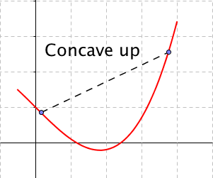
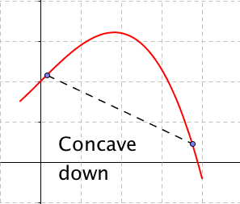
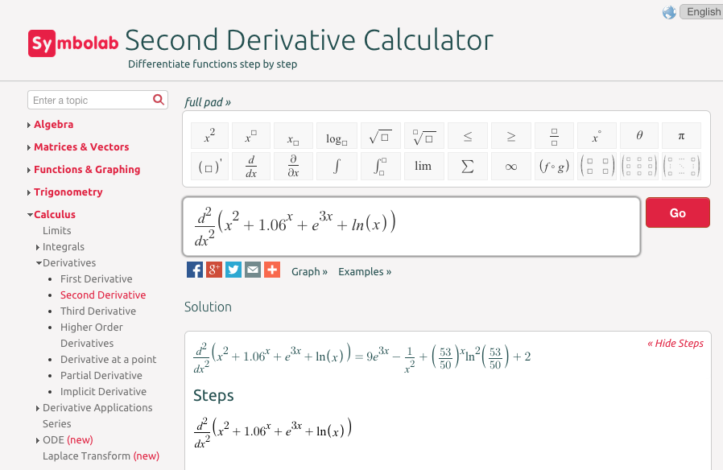
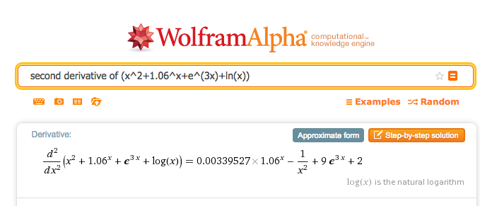
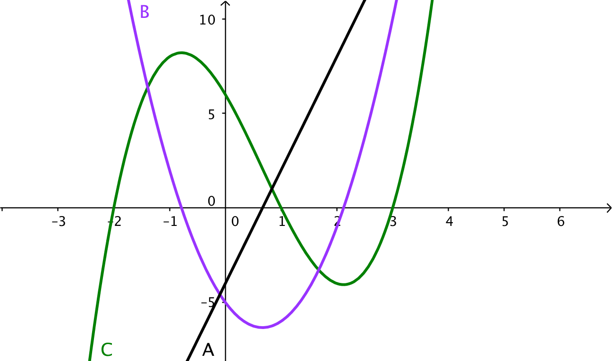
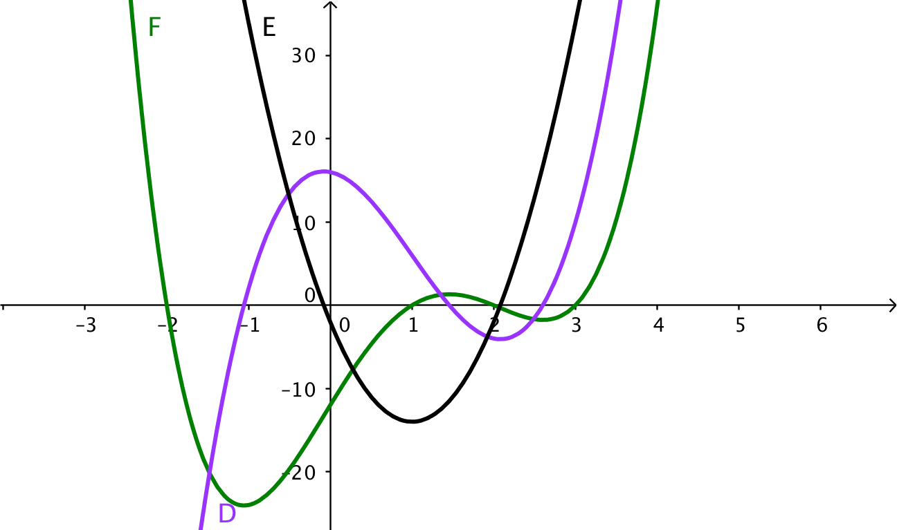

For an intuitive definition of the derivative, we talked about zooming in on the graph until it looks like a straight line and taking the slope. For concavity, we want to zoom out a bit, so the graph curves up or down from a line.
We say that a graph is concave up if the line between two points is above the graph, or alternatively if the first derivative is increasing. (In finance, such a curve is said to be convex.) Similarly, we say that a graph is concave down if the line between two points is below the graph, or alternatively if the first derivative is decreasing. (In finance, such a curve is said to be concave.)


In determining is a curve is concave up or concave down, we want to take the second derivative of a function, or the derivative of the derivative.
Definition4.5.1.
For a function \(f(x)\text{,}\) the second derivative of \(f(x)\) or the derivative of \(f'(x)\text{,}\) denoted as \(f''(x)\text{,}\) is defined as
As the last problem shows, it is often useful to simplify between taking the first and second derivatives.
If our function is the position of \(x\text{,}\) then the first derivative is the rate of change or the velocity of \(f(x)\text{.}\) The second derivative is acceleration or how fast velocity changes.
Graphically, the first derivative gives the slope of the graph at a point. The second derivative tells whether the curve is concave up or concave down at that point. If the second derivative is positive at a point, the graph is bending upwards at that point. Similarly, if the second derivative is negative, the graph is concave down. This is of particular interest at a critical point where the tangent line is flat and concavity tells us if we have a relative minimum or maximum.
Insight4.5.3.Second derivative test of extrema.
Let \(f(x)\) be a function with \(f'(x_0)=0\text{.}\) Then if \(f''(x_0) \gt 0\text{,}\) the function has a local minimum at \(x=x_0\text{.}\) If \(f''(x_0) \lt 0\text{,}\) the function has a local maximum at \(x=x_0\text{.}\) If \(f''(x_0)=0\text{,}\) the second derivative test fails and we cannot tell if we have a local maximum, local minimum, or neither.
Example4.5.4.Second derivative tests.
For the designated function and point, determine if the graph has a local minimum, local maximum, or non-extreme point, or if the second derivative test fails.
At \(x_0=2\text{,}\) we have \(f'(x_0)=0\) and \(f''(x_0)=12\text{.}\) We are at a critical point, and the curve is concave up, so we have a local minimum.
At \(x_0=-2\text{,}\) we have \(f'(x_0)=0\) and \(f'' (x_0 )=-12\text{.}\) We are at a critical point and the curve is concave down, so we have a local maximum.
At \(x_0=4\text{,}\) we have \(f'(x_0)=36\text{.}\) The second derivative is positive, so the curve is concave up, but since the derivative is not zero, this is not an extreme point.
At \(x_0=0\text{,}\) we have \(g'(x_0)=0\) and \(g''(x_0)=0\text{,}\) so the second derivative test fails at this point. (However if we look a the graph, we can see the curve is concave up everywhere, and that this point is a local minimum.)
At \(x_0=0\text{,}\) we have \(h'(x_0)=0\) and \(h''(x_0)=0\text{,}\) so the second derivative test fails at this point. (However if we look a the graph, we can see this point is neither a local minimum or a local maximum. It is a place where the graph switches from being concave up to being concave down. This is called an inflection point.)
We will use the second derivative test for finding maximums and minimums in the next chapter.
Second derivative with CAS.
We can find second derivatives with our favorite CAS programs.
With Symbolab

With WolframAlpha

Second derivative in finance.
The mathematical first and second derivatives are used in pricing various financial products and options that are also called derivatives. The first derivative is used to give a value to whether the underlying product has a price that goes up or down. It looks at the slope of the pricing curve. The second derivative is used to give a value to the volatility of the underlying product. It looks at how much the pricing curve bends. We will return to these uses when we look at integrals.
Reading QuestionsReading Check
1.Reading check, The Second Derivative and Concavity.
This question checks your reading comprehension of the material is section 4.5, The Second Derivative and Concavity, of Business Calculus with Excel. Based on your reading, select all statements that are correct. There may be more than one correct answer. The statements may appear in what seems to be a random order.
We say that a graph is concave down if the line between any two points is below the graph.
We say that a graph is concave up if the first derivative is increasing.
We say that a graph is concave up if the line between any two points is above the graph.
If the second derivative is positive we are at a local minimum.
If the second derivative is positive we are at a local maximum.
If the second derivative is zero we cannot have a local maximum.
The second derivative of a function is the derivative of the derivative of the function.
The second derivative test fails if we are not at a critical point.
None of the above
ExercisesExercises: The Second Derivative and Concavity Problems
Exercise Group.
Find the first and second derivatives of the given function.
Determine where the function is concave up and where it is concave down.
Find the critical points of the function. Classify each as a local minimum, a local maximum, neither, or not a local extremum.
1.
\(f(x)=(x-3)^2-4\)
Solution.
\begin{equation*}
f'(x)=2(x-3)
\end{equation*}
\begin{equation*}
f''(x)=2
\end{equation*}
The second derivative is always positive, so the function is always concave up
There is one critical point at \(x=3\text{.}\) It is a local minimum.
The function is concave down, where the second derivative is negative, that is for \(2-\sqrt{2} \lt t \lt 2+\sqrt{2}\text{.}\) It is concave up outside this region.
There are critical points when the derivative is undefined or 0. The only critical points are when \(t=0\) and \(t=2\text{.}\) When \(t=0\text{,}\)\(h''(t)\gt 0\text{,}\) so we have a local minimum. When \(t=2\text{,}\)\(h''(t)\lt 0\text{,}\) so we have a local maximum.
The function is concave down, where the second derivative is negative, which for our function is when the denominator is negative. The function \(m(x)\) is concave down when \(-3 \lt x \lt 3\text{.}\) It is concave up outside this region.
There are critical points when \(t\) is 0 or 2. When \(t=0\text{,}\)\(h''(t)\gt 0\text{,}\) so we have a local minimum. When \(t=2\text{,}\) the second derivative is negative and we have a local maximum.
The second derivative is always positive, to the function is always concave up.
The first derivative is always positive. There are no critical points.
Exercise Group.
Identify which curve is \(f\text{,}\)\(f'\text{,}\) and \(f''\text{.}\)
10.

11.

Solution.
Note that local maximums of a function must correspond to zeroes of its derivative. The original function is F (green). Its derivative is D (Purple). The second derivative is E (black).
Looking at the middle segment of the curves, the green curve is a downward facing parabola, whose derivative is a line with a negative slope like the purples curve, whose derivative is a negative constant like the black line.
For the next set of problems, you need to know the formula for the price of a zero coupon bond given the face value, the interest rate, and the time to maturity. For such instruments we use the formula